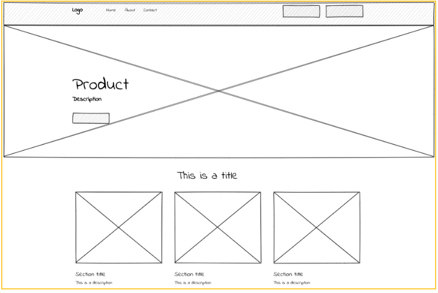
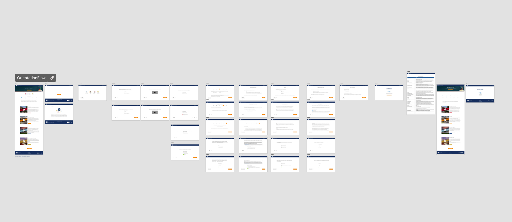
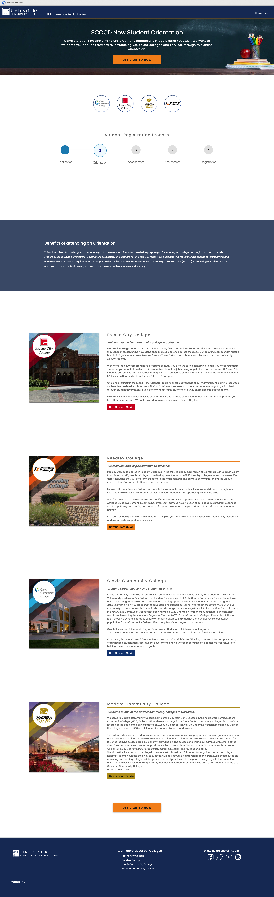

Student Orientation
A brief description of the project and its purpose.
| Tech Stack | .NET Core, SQL Server, JavaScript, Bootstrap |
|---|
| Project Type | Full-stack web app |
|---|
| Role | Lead Developer, UX Designer |
|---|
| Completion Date | Dec 2023 |
|---|
Project Overview
The goal of this project was to enhance the user experience by improving design, accessibility, and readability while introducing a 'save progress' feature that
allows students to seamlessly continue their work. The redesign focused on creating a more intuitive and visually clear interface that adheres to WCAG accessibility
standards, ensuring an inclusive and user-friendly experience for all students
In addition to enhancing design, accessibility, readability, and implementing a 'save progress' feature for students, the project includes the development of a dedicated
Admin Interface. This interface empowers IT staff to efficiently update and maintain orientation content, ensuring that students receive the most accurate and up-to-date
information.
Key Features
- Modernized & User-Friendly Design: Clean, structured UI with intuitive navigation and a mobile-responsive layout.
- Enhanced Accessibility (WCAG Compliant): Improved color contrast, keyboard navigability, ARIA labels, and screen reader support.
- Improved Readability: Larger fonts, better spacing, simplified layouts, and optional dark mode for optimal viewing.
- Save & Resume Progress: Allows students to continue where they left off, reducing frustration and improving usability.
- Performance & Optimization: Fast-loading pages, smooth user experience, and optimized backend logic.
- Secure & Scalable Architecture: Secure authentication and a scalable design for future feature expansions.
- Multilingual Support: Users can choose from multiple languages to enhance accessibility for diverse backgrounds.
- Administrative Interface: A dedicated admin panel that enables IT Personnel to easily update and maintain orientation content, ensuring information accuracy and timelines.
Project Gallery



Challenges & Solutions
Challenge: Collaborating with a diverse team of 20 professionals presented unique challenges, particularly in coordinating efforts and ensuring
comprehensive testing. To address these, we implemented robust communication strategies and structured testing protocols, which not only streamlined our processes
but also enhanced the overall quality of the project..
Solution:
- Adoption of the Scaled Agile Framework (SAFe): This approach promoted alignment and collaboration across all teams, enhancing our ability to scale agile practices effectively.
- Implementation of the Team Software Process (TSP): TSP provided a structured framework that improved team organization and productivity, ensuring high-quality software development.
- Utilization of Collaborative Tools: We leveraged project management platforms like Smartsheet to enhance collaboration, reduce the need for excessive meetings, and keep all team members aligned.
Lessons Learned & Future Improvements
- Learned advanced SQL query optimization and caching strategies.
- Improved ability to design for high-traffic environments.
- Future improvement: Implement real-time updates using WebSockets.
Interested in this project? Let's connect!
Contact Me
View LinkedIn